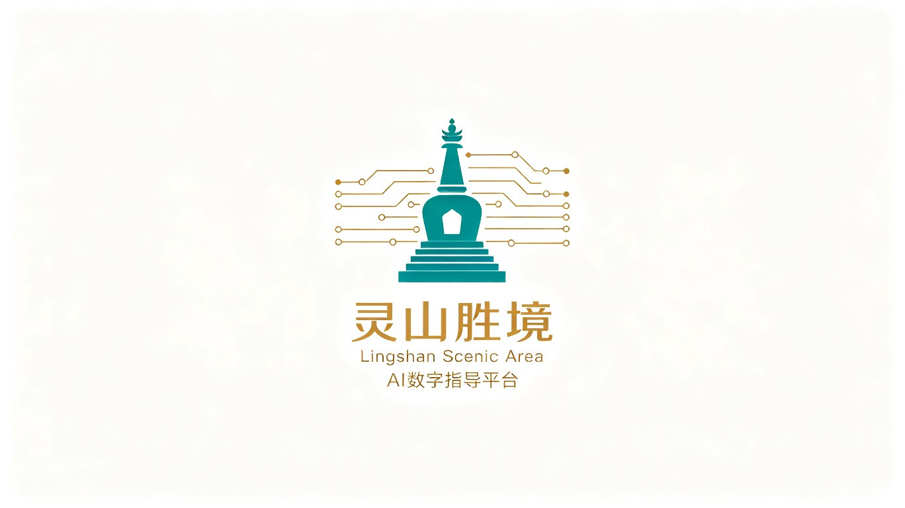

灵山胜境 · 智慧导览数据大屏
AI数字人导游 · 5A景区 · 实时监控
实时监控中
最后更新: --:--:--
今日客流
0
+18.5% 较昨日
昨日同期
7,190
本周均值
7,860
峰值时段
10:00-11:00
在园人数
0
+5.2% 较1小时前
1小时前
3,080
承载上限
15,000
承载率
21.6%
游客满意度
0%
+2.1% 较上周
上周均值
95.1%
评价总数
3,420
好评率
98.2%
AI对话数
0
+32.8% 较昨日
昨日同期
4,698
平均响应
1.8秒
解决率
96.5%
客流趋势（近7天）
最后更新：--:--:--
景点x时段客流热力图
最后更新：--:--:--
景点热度排行
最后更新：--:--:--
实时AI对话
最后更新：--:--:--
游客反馈词云
最后更新：--:--:--